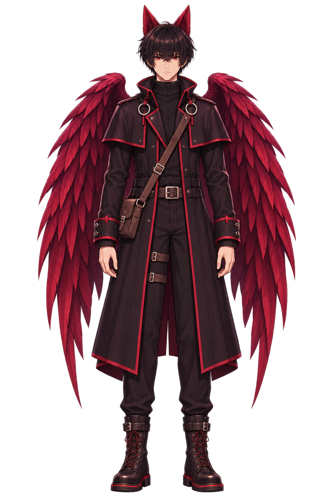
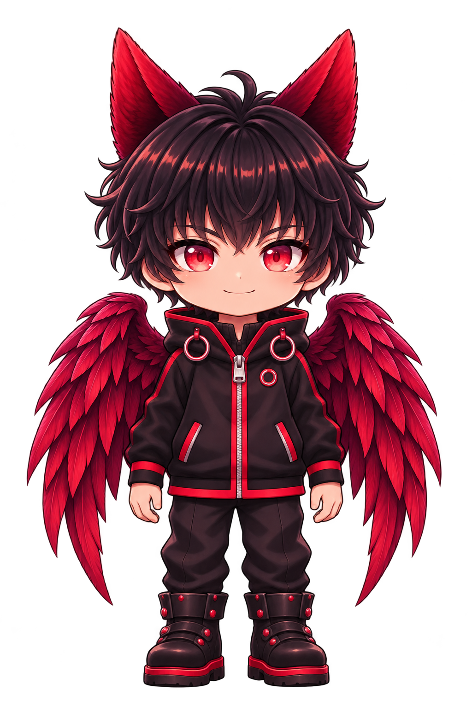

Light three lanterns, then return to the sanctuary.
0 / 3 WARDS LIT
0 / 3 MEMORIES · OPTIONAL
◇ YOU ✦ WARD / SOUL
W A S D MoveE InteractSPACE PulseQ GuardianSHIFT RunJ JournalESC Pause
E
AZRIK
A TOWN AT THE EDGE OF THE AFTERLIFE
Some souls need a light to find home.
You are Visreal Sinan. With Azrik at your side, walk the streets of Hollowhaven before the night rearranges them.
01 Light the wards02 Ring the bell03 Bring them home
A short playable first chapter · Keyboard or touch Single player with Azrik as your guardian companion. Co-op is not implemented.


VISREAL SINAN & AZRIK
THE TOWN CAN WAIT
Take a breath.
WASD / arrows to move · E to interact Space to pulse · Q for Azrik’s 3-second shield Shield protects nearby souls · 18-second cooldown Nightwatch: dodge amber lanes; E recalls scattered souls Shift to run · J for journal · M for sound
The first night is only the beginning.
THINGS THE TOWN REMEMBERS
The field journal.
Memories strengthen your lantern. Conversations and rescued souls leave their stories here. The game is paused while you read.